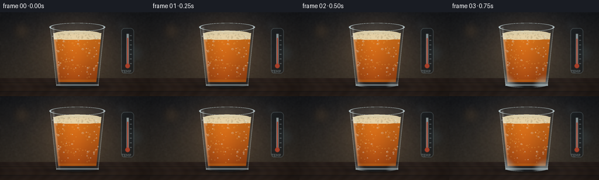
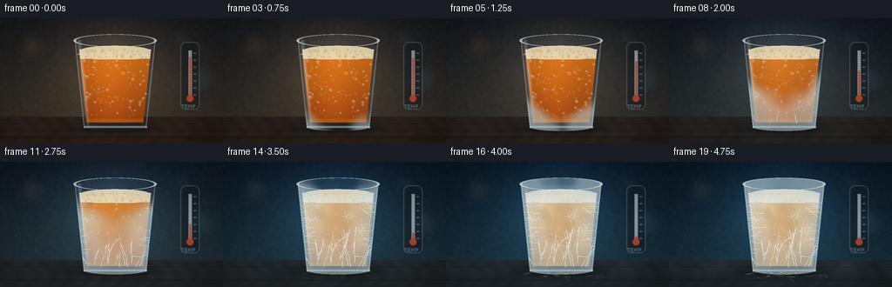

CODING AGENTS AS PIXEL WORLD MODELS
traex/GPT-5.6-Sol · phygen_095
点击播放 · 原生 RGB 像素
逐轮保存的候选
回放视频、检查图与代码变化。
每份候选均可单独播放。实际图片检查记录在下方工具轨迹中。
候选 01播放与检查图
点击播放 · 原生 RGB 像素


展开代码变化
--- 上一保存版本
+++ 本次保存版本
@@ -0,0 +1,355 @@
+from pathlib import Path
+
+import cv2
+import numpy as np
+from PIL import Image, ImageDraw, ImageFont, ImageFilter
+from scipy.ndimage import gaussian_filter
+
+import artifact_io
+
+
+# The scene is rendered large and reduced once. This makes the mathematical
+# glass, tiny bubbles, droplets and frost filaments read cleanly at 256x144.
+W, H, N = 256, 144, 20
+S = 3
+WW, HH = W * S, H * S
+ROOT = Path(__file__).resolve().parent
+RNG = np.random.default_rng(95117)
+
+
+def smoothstep(a, b, x):
+ z = np.clip((x - a) / (b - a), 0.0, 1.0)
+ return z * z * (3.0 - 2.0 * z)
+
+
+def over(im, color, alpha):
+ """Alpha composite a solid RGB color over a float RGB image."""
+ a = np.clip(alpha, 0, 1)[..., None]
+ return im * (1.0 - a) + np.asarray(color, np.float32) * a
+
+
+def ellipse_mask(cx, cy, rx, ry):
+ yy, xx = np.mgrid[0:HH, 0:WW]
+ return ((xx - cx * S) / (rx * S)) ** 2 + ((yy - cy * S) / (ry * S)) ** 2 <= 1
+
+
+def glass_bounds(y):
+ # Pint glass: subtly narrows towards the heavy foot.
+ u = np.clip((y - 25.0) / 101.0, 0, 1)
+ half = 46.5 - 10.5 * u
+ return 132.0 - half, 132.0 + half
+
+
+yy, xx = np.mgrid[0:HH, 0:WW]
+X, Y = xx / S, yy / S
+left, right = glass_bounds(Y)
+body = (Y >= 25) & (Y <= 126) & (X >= left) & (X <= right)
+outer = body | ellipse_mask(132, 25.5, 46.5, 7.2) | ellipse_mask(132, 124.5, 36.5, 5.0)
+inner_left, inner_right = left + 4.2, right - 4.2
+inner = (Y >= 29) & (Y <= 119.8) & (X >= inner_left) & (X <= inner_right)
+liquid = inner & (Y >= 43.0)
+liquid |= ellipse_mask(132, 43, 40.0, 5.6) & inner
+foam = inner & (Y >= 35.5) & (Y <= 47.0)
+foam |= ellipse_mask(132, 36.5, 39.0, 5.2) & inner
+foam &= ~((Y > 46.5) & ~ellipse_mask(132, 43, 39.5, 5.0))
+
+# Fixed, coherent textures (not regenerated between frames).
+fine = gaussian_filter(RNG.normal(0, 1, (HH, WW)), 1.1 * S)
+coarse = gaussian_filter(RNG.normal(0, 1, (HH, WW)), 6.0 * S)
+coarse = (coarse - coarse.min()) / (coarse.max() - coarse.min())
+fine /= max(1e-6, fine.std())
+
+
+def make_background(t):
+ # Timelapse color temperature changes from neutral cellar light to icy blue.
+ cold = smoothstep(0.04, 0.88, t)
+ top0 = np.array([28, 30, 34], np.float32)
+ bot0 = np.array([59, 51, 42], np.float32)
+ top1 = np.array([12, 27, 42], np.float32)
+ bot1 = np.array([28, 53, 66], np.float32)
+ top = top0 * (1 - cold) + top1 * cold
+ bot = bot0 * (1 - cold) + bot1 * cold
+ v = np.clip(Y / 119.0, 0, 1)[..., None]
+ im = top * (1 - v) + bot * v
+ # Soft spotlight behind the beer silhouette.
+ glow = np.exp(-(((X - 129) / 79) ** 2 + ((Y - 59) / 68) ** 2) * 1.7)
+ warm_glow = np.array([58, 38, 18]) * (1 - cold) + np.array([17, 46, 65]) * cold
+ im += glow[..., None] * warm_glow[None, None, :] * 0.72
+ im += fine[..., None] * 1.25
+
+ # Defocused cellar lights, intentionally behind the subject.
+ pil = Image.fromarray(np.uint8(np.clip(im, 0, 255)), "RGB")
+ haze = Image.new("RGBA", (WW, HH), (0, 0, 0, 0))
+ d = ImageDraw.Draw(haze)
+ bokeh = [(37, 32, 15, (223, 154, 82)), (208, 24, 10, (167, 203, 218)),
+ (228, 70, 18, (100, 155, 174)), (57, 77, 8, (184, 137, 75))]
+ for bx, by, br, col in bokeh:
+ c = tuple(int(col[k] * (1 - .35 * cold) + (125, 192, 218)[k] * .35 * cold) for k in range(3))
+ d.ellipse(((bx-br)*S, (by-br)*S, (bx+br)*S, (by+br)*S), fill=c+(31,))
+ haze = haze.filter(ImageFilter.GaussianBlur(7 * S))
+ pil = Image.alpha_composite(pil.convert("RGBA"), haze).convert("RGB")
+ im = np.asarray(pil, np.float32)
+
+ # Dark wooden bar in the foreground.
+ table = Y >= 113
+ wood_base = np.stack([
+ 42 + 7 * coarse + 3 * np.sin(Y * .58),
+ 32 + 5 * coarse + 2 * np.sin(Y * .58),
+ 27 + 4 * coarse,
+ ], axis=-1)
+ wood_cold = np.stack([32 + 6*coarse, 39 + 7*coarse, 43 + 9*coarse], axis=-1)
+ wood = wood_base * (1-cold) + wood_cold * cold
+ im[table] = wood[table]
+ # Fine grain and plank seams.
+ grain = (np.sin(X * .31 + 2*np.sin(Y*.18)) + np.sin(X*.073)) * 1.8
+ im[table] += grain[table, None]
+ for sy in (121.0, 136.0):
+ seam = np.exp(-((Y-sy)/.58)**2) * table
+ im = over(im, (16, 21, 23), seam*.5)
+ # Contact shadow remains anchored under the glass.
+ shadow = np.exp(-(((X-132)/55)**2 + ((Y-126.5)/7.2)**2)*2.0) * (Y > 115)
+ im = over(im, (4, 8, 10), shadow*.72)
+ return im
+
+
+# Bubble field and surface condensation locations.
+bubbles = []
+for _ in range(64):
+ bubbles.append((RNG.uniform(99, 165), RNG.uniform(49, 115),
+ RNG.uniform(.35, 1.2), RNG.uniform(6, 15), RNG.uniform(0, 1)))
+
+droplets = []
+for _ in range(38):
+ py = RNG.uniform(37, 111)
+ l, r = glass_bounds(py)
+ px = RNG.uniform(l+3, r-3)
+ droplets.append((px, py, RNG.uniform(.65, 2.0), RNG.uniform(0.0, .32)))
+
+
+def build_frost_filaments():
+ """Return hand-grown dendritic segments carrying their own appearance time."""
+ segs = []
+ # Crystals climb from the cold base, branching into feathery Ys.
+ for root_x in np.linspace(101, 163, 13) + RNG.uniform(-2.5, 2.5, 13):
+ p = np.array([root_x, RNG.uniform(116, 123)], float)
+ ang = RNG.uniform(-2.03, -1.12)
+ birth = RNG.uniform(.29, .48)
+ for j in range(RNG.integers(5, 10)):
+ length = RNG.uniform(3.8, 8.2)
+ q = p + length * np.array([np.cos(ang), np.sin(ang)])
+ segs.append((tuple(p), tuple(q), birth + j*.035, RNG.uniform(.45, 1.05)))
+ if j > 0 and RNG.random() < .72:
+ side_ang = ang + RNG.choice([-1, 1]) * RNG.uniform(.55, 1.0)
+ sq = p + length*.55*np.array([np.cos(side_ang), np.sin(side_ang)])
+ segs.append((tuple(p), tuple(sq), birth+j*.035+.018, RNG.uniform(.3,.7)))
+ p = q
+ ang += RNG.normal(0, .19)
+ # Smaller needles invade from both glass walls.
+ for side in (-1, 1):
+ for root_y in np.linspace(46, 106, 10) + RNG.uniform(-2, 2, 10):
+ l, r = glass_bounds(root_y)
+ p = np.array([l+1 if side < 0 else r-1, root_y])
+ ang = RNG.uniform(-.45, .45) if side < 0 else np.pi+RNG.uniform(-.45,.45)
+ birth = .35 + (108-root_y)/180 + RNG.uniform(-.05,.05)
+ for j in range(RNG.integers(2, 5)):
+ length = RNG.uniform(3, 6)
+ q = p + length*np.array([np.cos(ang), np.sin(ang)])
+ segs.append((tuple(p), tuple(q), birth+j*.045, RNG.uniform(.3,.8)))
+ p = q
+ ang += RNG.normal(0,.2)
+ return segs
+
+
+frost_segments = build_frost_filaments()
+
+
+def draw_thermometer(im, t):
+ """A subdued physical thermometer reinforces the large temperature drop."""
+ layer = Image.new("RGBA", (WW, HH), (0, 0, 0, 0))
+ d = ImageDraw.Draw(layer)
+ x = 218*S
+ d.rounded_rectangle((207*S, 27*S, 229*S, 105*S), radius=6*S,
+ fill=(23,30,35,135), outline=(155,181,189,100), width=S)
+ d.line((x, 37*S, x, 91*S), fill=(198,216,219,180), width=4*S)
+ # Falling column: high at room temperature, low after deep cooling.
+ level = (44 + 43*smoothstep(.06,.93,t))*S
+ col = (211, 75, 47, 220)
+ d.line((x, level, x, 92*S), fill=col, width=2*S)
+ d.ellipse(((214)*S, 88*S, (222)*S, 96*S), fill=col)
+ for ty in range(40, 89, 8):
+ d.line((222*S, ty*S, 225*S, ty*S), fill=(186,204,208,130), width=S)
+ try:
+ font = ImageFont.truetype("/usr/share/fonts/truetype/dejavu/DejaVuSans.ttf", 6*S)
+ except OSError:
+ font = ImageFont.load_default()
+ d.text((208*S, 98*S), "TEMP", font=font, fill=(186,207,212,160))
+ layer = layer.filter(ImageFilter.GaussianBlur(.35*S))
+ base = Image.fromarray(np.uint8(np.clip(im,0,255)), "RGB").convert("RGBA")
+ return np.asarray(Image.alpha_composite(base, layer).convert("RGB"), np.float32)
+
+
+def render(t, frame_index):
+ im = draw_thermometer(make_background(t), t)
+
+ # The glass casts/refracts a broad background highlight.
+ lens = outer.astype(float) * (8 + 8*np.exp(-((X-128)/32)**2))
+ im += lens[...,None] * np.array([.62,.78,.90])[None,None,:]
+
+ freeze = smoothstep(.25, .93, t)
+ liquid_grad = np.clip((Y-43)/78, 0, 1)
+ amber = np.zeros_like(im)
+ amber[...,0] = 218 - 59*liquid_grad
+ amber[...,1] = 112 - 50*liquid_grad
+ amber[...,2] = 20 - 8*liquid_grad
+ # Frozen beer is paler, opaque and slightly blue at the edges.
+ frozen_col = np.stack([198-24*liquid_grad, 174-25*liquid_grad,
+ 112-13*liquid_grad], axis=-1)
+ cloud = np.clip((coarse-.42)*2.5, 0, 1) * freeze
+ beer = amber*(1-freeze*.58) + frozen_col*(freeze*.58)
+ beer += (cloud*25 + fine*1.4*freeze)[...,None]
+ # Warm transmitted core remains visible even beneath late frost.
+ core_light = np.exp(-((X-127)/22)**2) * (1-freeze*.45)
+ beer += core_light[...,None]*np.array([28,14,1])
+ a_liq = liquid.astype(float)*(.87 + .08*freeze)
+ im = im*(1-a_liq[...,None]) + beer*a_liq[...,None]
+
+ # Liquid level meniscus and bright lower refraction.
+ meniscus = np.exp(-((Y-43.1)/1.0)**2) * (X>inner_left) * (X<inner_right)
+ im = over(im, (245, 174, 55), meniscus*.38*(1-freeze*.55))
+ bottom_glow = np.exp(-((Y-117.5)/2.4)**2) * inner
+ im = over(im, (235, 152, 40), bottom_glow*.28*(1-freeze*.5))
+
+ # Foam cap: fresh bubbles become a rough pale frozen crown.
+ foam_noise = np.clip(.78 + fine*.055 + (coarse-.5)*.12, 0, 1)
+ foam_col = np.zeros_like(im)
+ foam_col[...,0] = 226 + 14*foam_noise
+ foam_col[...,1] = 207 + 18*foam_noise
+ foam_col[...,2] = 161 + 25*foam_noise + freeze*15
+ fa = foam.astype(float)*(.94)
+ im = im*(1-fa[...,None]) + foam_col*fa[...,None]
+ # Foam cells, with fewer visible as the cap freezes.
+ layer = Image.new("RGBA", (WW,HH), (0,0,0,0)); d=ImageDraw.Draw(layer)
+ local = np.random.default_rng(701)
+ for _ in range(55):
+ bx, by = local.uniform(96,168), local.uniform(36,46)
+ rr = local.uniform(.45,1.3)
+ l,r=glass_bounds(by)
+ if l+3 < bx < r-3:
+ a=int(105*(1-freeze*.6))
+ d.ellipse(((bx-rr)*S,(by-rr)*S,(bx+rr)*S,(by+rr)*S),
+ outline=(112,91,53,a),width=max(1,S//2))
+ im = np.asarray(Image.alpha_composite(Image.fromarray(np.uint8(np.clip(im,0,255))).convert("RGBA"),layer).convert("RGB"),np.float32)
+
+ # Rising carbonation slows, then stops, as the contents solidify.
+ bubble_layer = Image.new("RGBA",(WW,HH),(0,0,0,0)); d=ImageDraw.Draw(bubble_layer)
+ active = 1-smoothstep(.35,.72,t)
+ for bx, by, br, speed, phase in bubbles:
+ py = 114 - ((114-by + speed*(t*3.2+phase)) % 66)
+ if py < 48: py += 66
+ l,r=glass_bounds(py)
+ if l+6 < bx < r-6:
+ a=int(130*active)
+ d.ellipse(((bx-br)*S,(py-br)*S,(bx+br)*S,(py+br)*S),
+ outline=(255,220,123,a),width=max(1,S//2))
+ im=np.asarray(Image.alpha_composite(Image.fromarray(np.uint8(np.clip(im,0,255))).convert("RGBA"),bubble_layer).convert("RGB"),np.float32)
+
+ # Condensation beads: wet at first, whitening into nucleation points.
+ drop_layer=Image.new("RGBA",(WW,HH),(0,0,0,0)); d=ImageDraw.Draw(drop_layer)
+ for dx,dy,dr,phase in droplets:
+ wet = 1-smoothstep(.24+phase,.62+phase*.3,t)
+ if wet>.01:
+ d.ellipse(((dx-dr)*S,(dy-dr*.8)*S,(dx+dr)*S,(dy+dr*.8)*S),
+ fill=(186,220,224,int(35*wet)),outline=(239,250,250,int(145*wet)),width=max(1,S//2))
+ d.ellipse(((dx-dr*.45)*S,(dy-dr*.5)*S,(dx)*S,(dy)*S),fill=(255,255,255,int(150*wet)))
+ im=np.asarray(Image.alpha_composite(Image.fromarray(np.uint8(np.clip(im,0,255))).convert("RGBA"),drop_layer).convert("RGB"),np.float32)
+
+ # Frost field has a travelling front: base first, then walls, finally rim.
+ v=np.clip((Y-25)/101,0,1)
+ q=np.clip(np.abs(X-132)/(46.5-10.5*v),0,1)
+ onset=.14 + .62*(1-v) - .14*q + (coarse-.5)*.14
+ frost=smoothstep(onset,onset+.16,t)*outer
+ # Preserve an amber central viewing window, while still visibly freezing it.
+ center=np.exp(-((X-132)/25)**2)*np.exp(-((Y-73)/49)**2)
+ frost*=1-.48*center
+ frost_col=np.zeros_like(im)
+ frost_col[...,0]=196+37*coarse
+ frost_col[...,1]=222+28*coarse
+ frost_col[...,2]=229+24*coarse
+ im=im*(1-(frost*.58)[...,None])+frost_col*(frost*.58)[...,None]
+
+ # Dendritic frost filaments appear in place, with brighter branch tips.
+ crystal=Image.new("RGBA",(WW,HH),(0,0,0,0)); d=ImageDraw.Draw(crystal)
+ for p,q2,birth,width in frost_segments:
+ a=int(220*smoothstep(birth,birth+.10,t))
+ if a:
+ d.line((p[0]*S,p[1]*S,q2[0]*S,q2[1]*S),fill=(229,249,255,a),width=max(1,int(width*S)))
+ # Fine radial starbursts around selected former droplets.
+ for k,(dx,dy,dr,phase) in enumerate(droplets[::3]):
+ amount=smoothstep(.46+phase*.3,.62+phase*.3,t)
+ if amount>0:
+ for j in range(6):
+ ang=j*np.pi/3+(k%3)*.18
+ length=(2.0+3.5*amount+(k%4)*.4)
+ d.line((dx*S,dy*S,(dx+np.cos(ang)*length)*S,(dy+np.sin(ang)*length)*S),
+ fill=(235,251,255,int(175*amount)),width=max(1,S//2))
+ # Clip all glass frost branches to the silhouette.
+ ca=np.asarray(crystal).copy()
+ ca[...,3]=(ca[...,3].astype(float)*outer).astype(np.uint8)
+ crystal=Image.fromarray(ca,"RGBA")
+ im=np.asarray(Image.alpha_composite(Image.fromarray(np.uint8(np.clip(im,0,255))).convert("RGBA"),crystal).convert("RGB"),np.float32)
+
+ # Frozen interior fracture lines become visible late in the timelapse.
+ crack=Image.new("RGBA",(WW,HH),(0,0,0,0)); d=ImageDraw.Draw(crack)
+ caa=int(115*smoothstep(.63,.86,t))
+ paths=[[(117,51),(123,67),(120,82),(129,96)],[(150,54),(143,69),(147,84),(139,105)],
+ [(106,89),(119,83),(132,87),(145,79),(158,82)]]
+ for pts in paths:
+ d.line([(a*S,b*S) for a,b in pts],fill=(233,247,244,caa),width=max(1,S//2),joint="curve")
+ ar=np.asarray(crack).copy(); ar[...,3]=(ar[...,3].astype(float)*inner).astype(np.uint8)
+ im=np.asarray(Image.alpha_composite(Image.fromarray(np.uint8(np.clip(im,0,255))).convert("RGBA"),Image.fromarray(ar,"RGBA")).convert("RGB"),np.float32)
+
+ # Glass contour, rim and persistent specular strokes.
+ edge=np.exp(-((X-left)/1.05)**2)+np.exp(-((X-right)/1.05)**2)
+ edge*=body
+ im=over(im,(219,241,245),np.clip(edge*.43,0,.58))
+ highlight=np.exp(-((X-(left+5.2))/2.0)**2)*body*np.exp(-((Y-65)/58)**2)
+ im=over(im,(255,255,250),highlight*.33*(1-frost*.5))
+ rim=np.abs(((X-132)/46.5)**2+((Y-25.5)/7.1)**2-1)<.065
+ im=over(im,(223,243,247),rim*.75)
+ foot=np.exp(-((Y-124.8)/1.15)**2)*(X>96)*(X<169)
+ im=over(im,(209,232,238),foot*.62)
+
+ # Hoarfrost spreads from the foot onto the tabletop at very low temperature.
+ ice_amt=smoothstep(.58,.94,t)
+ tableice=Image.new("RGBA",(WW,HH),(0,0,0,0)); d=ImageDraw.Draw(tableice)
+ for i in range(38):
+ local=np.random.default_rng(4000+i)
+ bx=132+local.normal(0,28); by=126+abs(local.normal(0,4.0))
+ ang=local.uniform(0,np.pi*2); ln=local.uniform(2,10)*ice_amt
+ ex=bx+np.cos(ang)*ln; ey=by+np.sin(ang)*ln*.38
+ a=int(local.uniform(75,155)*ice_amt)
+ d.line((bx*S,by*S,ex*S,ey*S),fill=(212,242,249,a),width=max(1,S//2))
+ if i%3==0:
+ d.line((ex*S,ey*S,(ex+np.cos(ang+.8)*ln*.35)*S,(ey+np.sin(ang+.8)*ln*.18)*S),fill=(225,249,252,a),width=max(1,S//2))
+ im=np.asarray(Image.alpha_composite(Image.fromarray(np.uint8(np.clip(im,0,255))).convert("RGBA"),tableice).convert("RGB"),np.float32)
+
+ # Cold mist curls close to the bar only at the end.
+ mist=smoothstep(.66,.98,t)*(np.exp(-((Y-121)/8)**2))*((np.sin(X*.09+frame_index*.13)+1)*.5)
+ mist*=1-np.exp(-((X-132)/70)**2)
+ im=over(im,(168,212,226),mist*.10)
+
+ # Subtle cinematic vignette and final downsampling.
+ vign=np.clip(1-.26*((X-128)/140)**2-.22*((Y-72)/88)**2,.68,1)
+ im*=vign[...,None]
+ out=Image.fromarray(np.uint8(np.clip(im,0,255)),"RGB")
+ out=out.resize((W,H),Image.Resampling.LANCZOS)
+ return np.asarray(out,dtype=np.uint8)
+
+
+def main():
+ frames=np.stack([render(i/(N-1),i) for i in range(N)],axis=0)
+ artifact_io.save(frames,ROOT)
+
+
+if __name__ == "__main__":
+ main()
可观测工具轨迹
实际执行的命令与返回图片。
命令 1exit 0
/bin/bash -lc "cat prompt.txt && printf '\\n--- GENERATION_RULES.md ---\\n' && cat GENERATION_RULES.md && printf '\\n--- task_spec.json ---\\n' && cat task_spec.json"
命令 2exit 1
/bin/bash -lc "find . -maxdepth 3 -type f -printf '%p\\n' | sort && printf '\\n--- binaries ---\\n' && command -v ffmpeg && command -v python3 && (command -v blender || true)"
命令 3exit 0
/bin/bash -lc 'cat artifact_io.py'
命令 4exit 0
/bin/bash -lc "python3 - <<'PY' mods=['numpy','PIL','imageio','cv2','scipy'] for m in mods: try: x=__import__(m); print(m, 'OK', getattr(x,'__version__','')) except Exception as e: print(m,'NO',e) PY command -v ffmpeg || true command -v convert || true command -v magick || true"
命令 5exit 1
/bin/bash -lc 'python3 generate.py'
命令 6exit 0
/bin/bash -lc "python3 generate.py && python3 - <<'PY'
from pathlib import Path
import numpy as np
from PIL import Image
p=np.load('pixels.npz')['pixels']
print('packed',p.shape,p.dtype,'unique first/last',len(np.unique(p[:,:,0])),len(np.unique(p[:,:,-1])))
for f in ['pixels.npz','index.html','inspection.png','transition_check.png']:
x=Path(f); print(f,x.stat().st_size)
print('frames',len(list(Path('frames').glob('*.png'))))
PY"命令 7exit 0
/bin/bash -lc "python3 - <<'PY'
import json, numpy as np
from PIL import Image
from pathlib import Path
s=json.load(open('task_spec.json'))
files=sorted(Path('frames').glob('*.png'))
a=np.stack([np.asarray(Image.open(x).convert('RGB')) for x in files])
print('shape/dtype:',a.shape,a.dtype)
print('expected:',(s['frames'],s['height'],s['width'],3))
print('adjacent mean abs deltas:',np.round(np.abs(np.diff(a.astype(float),axis=0)).mean((1,2,3)),2).tolist())
print('overall first-last MAD:',round(np.abs(a[-1].astype(float)-a[0].astype(float)).mean(),2))
assert a.shape==(20,144,256,3) and a.dtype==np.uint8
assert Path('pixels.npz').exists() and Path('index.html').exists()
PY"视觉工具实际返回图片 1

视觉工具实际返回图片 2

保存候选 1 份；完成命令 7 次；可验证图片返回 2 张。原始 API 响应与完整日志保留在本地。